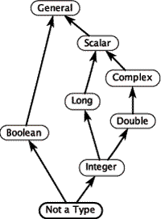
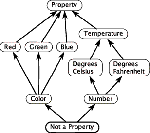
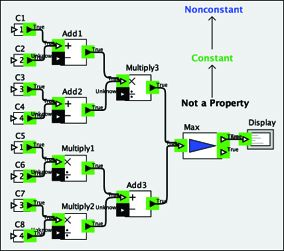
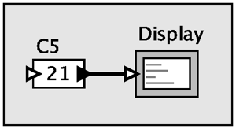

Ben Lickly, Dai Bui, Elizabeth Latronico1, Charles Shelton2, Stavros Tripakis, Christopher Brooks and Edward A. Lee
Center for Hybrid and Embedded Software Systems (CHESS), National Science Foundation 0720882 (CSR-EHS: PRET), National Science Foundation 1035672 (CPS: PTIDES), National Science Foundation 0931843 (ActionWebs), Army Research Office W911NF-07-2-0019 (SCOS), Air Force Office of Scientific Research FA9550-06-0312 (HCDDES MURI), Air Force Research Lab, Multiscale Systems Center (MuSyC), Robert Bosch GmBH, National Instruments, Thales and Toyota
The Ptolemy Hierarchical Orthogonal Multi-Attribute Solver (PtHOMAS) is a collaborative project with CHESS partner Bosch through the Bosch Research and Technology Center with additional funding from the Army Research Office in connection with the OSD Software-Intensive Systems Producibility Initiative. This project also has applications in the NAOMI collaboration with CHESS partner Lockheed-Martin.
This project is focused on enhancing model-based design techniques with the ability to include in models semantic information about data (what the data means), to check consistency in the usage of data across models, and to optimize models based on inferences made about the meaning of the data.
The approach is to build on classical data type systems, which address this problem up to a point. It is easy to check, for example, whether two models agree that a variable represents an integer value. But additional meaning like the units and the semantic interpretation of the data is not captured in the type system. An organization of such meaning is referred to in computer science as a data ontology.
In classical type systems, the relationship between types form a partial order, or more specifically, a mathematical lattice, as shown in figure 1, "A type lattice", for small subset of a typical type system. Type checking and type inference algorithms are based on efficient algorithms for solving systems of inequalities over such partial orders.
A data ontology can be similarly constructed as a lattice, as shown in figure 2 "A data ontology". In this example, each node in the ontology specifies an interpretation of a piece of data and the relations between nodes indicate "is a" relationships between these interpretations. In the PtHOMAS project, we associate such ontologies with models and apply consistency checks, inference algorithms, and model optimizations based on the results of the inference.
Figure 3, "A Const/Nonconst base model", for example, has a simple 3-element lattice associated with it (NotAProperty -> Const -> Nonconstant), and based on inference results, can be automatically transformed to figure 4, "A Const/Nonconst optimized model".




1Bosch
2Bosch
More information: http://chess.eecs.berkeley.edu/pthomas